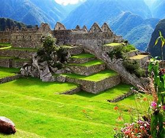

More than 7,000 feet above sea level in the Andes Mountains, Machu Picchu is the most visited tourist destination in Peru. A symbol of the Incan Empire and built around 1450AD, Machu Picchu was designated a UNESCO World Heritage Site in 1983 and was named one of the New Seven Wonders of the World in 2007.
| Ancient name: | Huayna Picchu |
| Architect: | the Inca emperor Pachacuti |
| Constructed: | around 1450 AD |
| Material: | granite |
| Height: | Original: 2,430-meter (7,970 ft) |
| Base: | 530 meters long by 200 wide |
| Volume: | 2,430-meter (7,970 ft) mountain ridge |
| Inscription: | 15th Century |
| Area: | Eastern Cordillera of southern Peru |
The so-called “Sun Gate” (the Incas called it “Inti Punku”) is the Inca Trail entry into the valley and plateau of Machu Picchu, which sits about 1,000 feet (305 meters) below the portal.
Much of the farming done at Machu Picchu was done on its hundreds of man-made terraces. These terraces were a work of considerable engineering, built to ensure good drainage and soil fertility while also protecting the mountain itself from erosion and landslides.
Machu Picchu is situated above a bow of the Urubamba River, which surrounds the site on three sides, where cliffs drop vertically for 450 meters (1,480 ft) to the river at their base. The area is subject to morning mists rising from the river
Machu Picchu is called the 'lost city' because its location was forgotten by the general public for many years. The complex was built in about 1450 and abandoned before the mid-16th century. Although local residents knew where the complex was, Europeans and other outsiders did not know it existed.
Machu Picchu was an astronomical observatory, and its sacred Intihuatana stone accurately indicates the two equinoxes. Twice a year, the sun sits directly over the stone creating no shadow.
The stones in the most handsome buildings throughout the Inca Empire used no mortar. These stones were cut so precisely, and wedged so closely together, that a credit card cannot be inserted between them.
While the Inca are best remembered for their beautiful walls, their civil engineering projects were incredibly advanced as well. (Especially, as is often noted, for a culture that used no draft animals, iron tools, or wheels.) The site we see today had to be sculpted out of a notch between two small peaks by moving stone and earth to create a relatively flat space.
First you have to find the museum, though. It’s inconveniently tucked at the end of a long dirt road near the base of Machu Picchu, about a 30-minute walk from the town of Aguas Calientes.
Take the time to follow the hair-raising trail to the Temple of the Moon, located on the far side of Huayna Picchu. Here, a ceremonial shrine of sorts has been built into a cave lined with exquisite stonework and niches that were once probably used to hold mummies.